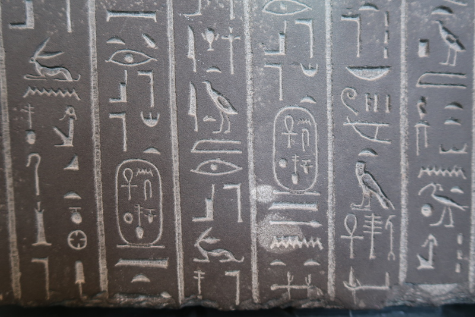
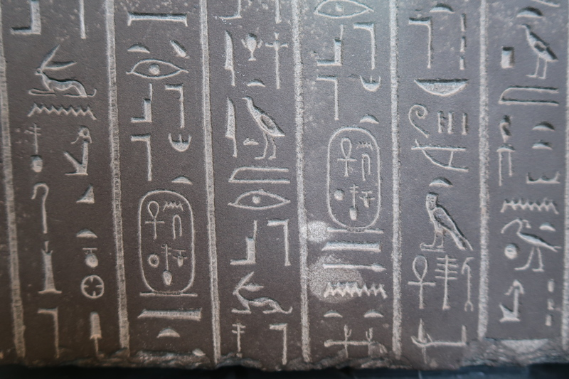
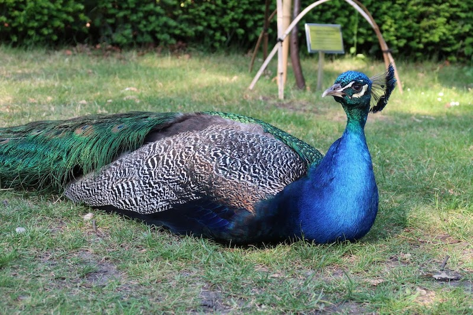
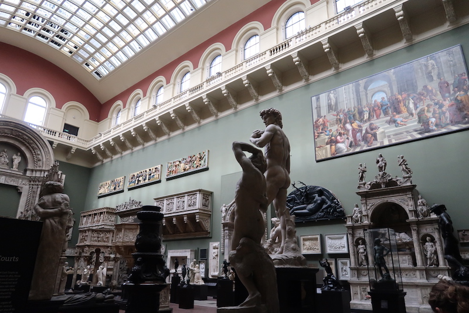
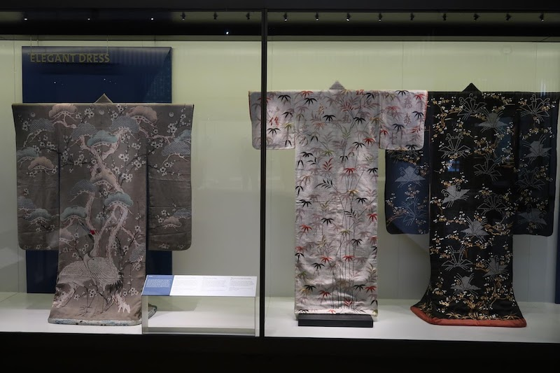
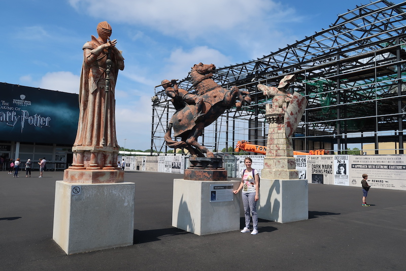
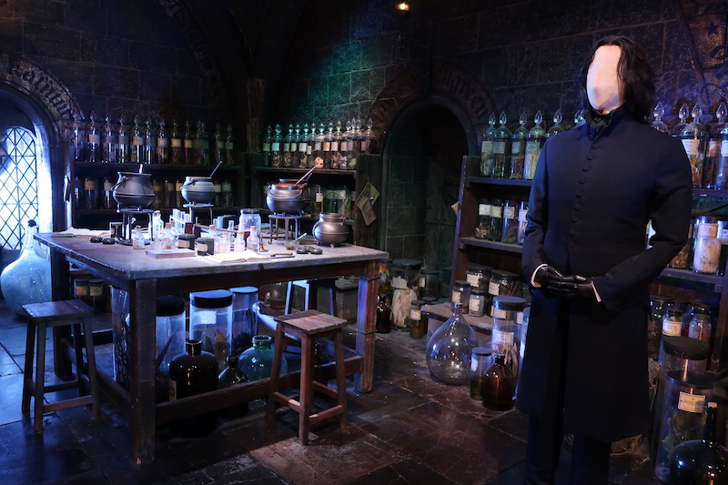
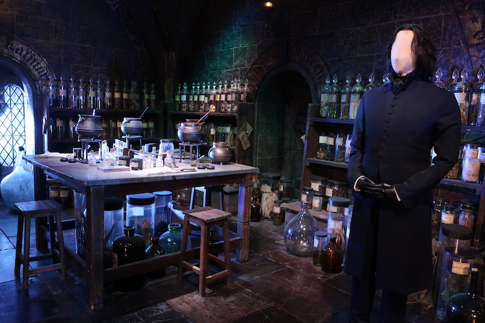

Voyage à Londres en juin 2018
Second article de la série « revivre ses voyages pendant le confinement » avec notre séjour à Londres, en juin 2018.
Le transport
Une fois n’est pas coutume, nous avons eu beaucoup de chance pour démarrer notre voyage. Je ne l’avais pas précisé dans mon article précédent, mais avant de partir à Bergen, nous nous étions fait voler nos balais d’essuie-glace sur la voiture. Nous avions dû rouler jusqu’à l’aéroport sans essuies-glace puisqu’il faisait nuit et qu’aucune station service sur la route n’en vendait ! Génial sous la pluie !
Pour ce départ à Londres, nous avions réservé nos billets de train et d’Eurostar. C’était sans compter que la SNCF a choisi ce moment mémorable pour entamer une énième grève qui a conduit à l’annulation de nos trains. Nous avons dû nous rabattre sur le bus. Comme c’était la première fois que nous faisions un aussi long trajet en bus et que nous avons dû agir un peu précipitamment, nous avons bêtement pris plusieurs billets, au lieu de choisir un aller complet. Je m’explique : nous avons fait Clermont – Paris puis Paris – Calais. À Calais, nous avons attendu des heures, durant la nuit, que le prochain bus nous fasse monter dans le ferry et nous emmène à Londres. L’enfer. Ce qui est certain, c’est que maintenant nous savons que nous ne procéderons plus jamais ainsi. Nous aurions pu faire directement Paris – Londres !
Nous sommes arrivés à la station de bus londonienne de bon matin, chargés de nos bagages, et nous devions traverser Londres pour rejoindre l’hôtel que nous avions réservé à proximité de King’s Cross, évidemment, puisque nous devions arriver en Eurostar…
Visites à Londres
Il faisait beau, nous étions fatigués, mais nous nous sommes ravis de traverser des parcs, de voir les bobbies défiler devant les grilles de Buckingham Palace.
Notre séjour s’est organisé en fonction de l’hôtel, qui était idéalement situé au centre. Nous avons pu voir la magnifique architecture de nombreux bâtiments, notamment celle de la gare de Saint-Pancras, King’s Cross (oui oui, celle où Harry va prendre le Poudlard Express !).
Nous avons visité le British Museum plusieurs fois, tant il est vaste. Nous avons découvert de magnifiques objets. Ce n’était pas facile de passer des heures à piétiner là-dedans, mais ça valait le coup.
 


Nous sommes également allés à la National Gallery. Certaines peintures étaient époustouflantes. Nous étions comblés. Il a fallu beaucoup marcher pour aller là-bas. Nous avons parcouru Londres dans tous les sens à pied !
Nous sommes allés voir la cathédrale St-Paul et nous avons ensuite longé la Tamise et dégusté une pizza sur une terrasse abritée du crachin qui tombait dehors en soirée. Nous avons eu aussi la chance de nous balader du côté de Westminster·. Big Ben était caché sous des échafaudages, mais le parlement était splendide. Nous avons parcouru Piccadilly Circus et son effervescence. La pièce The Cursed Child de l’univers Harry Potter y était produite. Les billets étaient bien trop onéreux.
Nous sommes également allés au Natural History Museum qui est l’un des plus beaux et des plus prestigieux bâtiments que nous avons eu l’occasion de voir. Après, voir des squelettes ou des animaux naturalisés ne nous a pas forcément plus. L’avantage, c’est que dans ce quartier nous avons pu manger dans un restaurant japonais très sympathique.
Nous nous sommes délassés dans Holland Park où nous avons rencontré un magnifique paon et un écureuil brigand.
Nous avons également visité le V& A Museum, qui est sans doute le plus beau et le meilleur musée de tout ceux que nous avons vus.

On y voyait des vêtements, du mobilier et des oeuvres de tous horizons.
Les studios Harry Potter
Évidemment, nous ne pouvions pas aller à Londres sans faire un crochet par le Studio Tour Warner Bros consacré aux films Harry Potter. Il s’agissait plus de visiter un musée que de voir les coulisses des films, mais c’était tout de même grandiose. J’étais au paradis.
Sans compter les couloirs de file d’attente qui sont remplis d’objets des films tels que la Coupe de feu, des costumes ou la Ford Anglia, ou encore la possibilité de mettre son nez dans le placard à balai où Harry a passé son enfance, la visite commence par un petit film dans lequel les acteurs nous disent coucou, etc. L’écran de cinéma se soulève ensuite pour laisser apparaître… Les portes de la Grande Salle de Poudlard ! Nous pénétrons directement dans la grande salle, avec les quatre tables des élèves, le pupitre avec les professeurs, les cheminées, etc. Il y a eu une petite animation de la Coupe de feu crachant le parchemin avec le nom de Harry. Trop bien !
Ensuite nous suivons une visite présentant différents, décors, des costumes, des objets, des astuces permettant de rendre les choses « magiques ». Tout est génial !
 


La visite se termine avec une maquette géante du château et une boutique dans laquelle on veut tout prendre alors que rien n’est utile !
Bilan du voyage
J’ai été surprise d’apprécier autant ce séjour en ville. D’habitude, nous préférons la nature et les randonnées. Là, nous étions au cœur de la ville, mais nous étions seuls et tranquilles. Nous allions où nous voulions, nous marchions à notre allure, nous n’avions à parler à personne (sauf pour commander à manger par exemple) – et heureusement, car certains Anglais ne font aucun effort pour se faire comprendre ! Nous avons pris plaisir à visiter tous ces musées et à nous émerveiller devant tant d’œuvres artistiques.
Le joyau de la couronne était pour moi la visite des studios HP. Je suis trop heureuse d’y être allée et je ne veux jamais oublier ça !